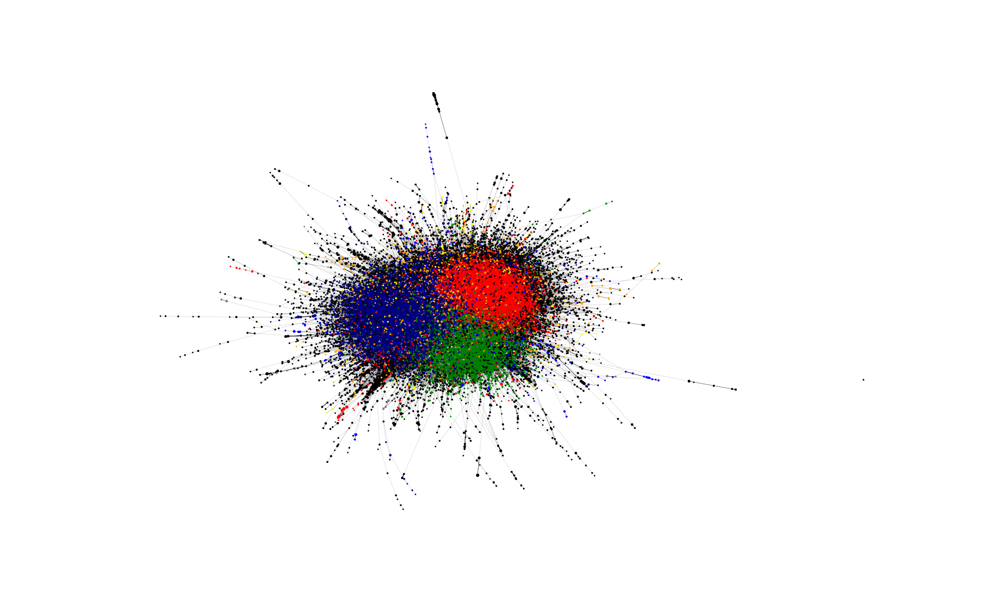

Community detection (multiplex)
Community detection is considered when a given network’s topology is considered at meso-scales. py3plex supports both the widely used InfoMap, for which it offers a wrapper:
1 from py3plex.algorithms.community_detection import community_wrapper as cw
2 from py3plex.core import multinet
3
4 network = multinet.multi_layer_network(network_type = "multiplex").load_network(input_file="../datasets/simple_multiplex.edgelist",directed=False,input_type="multiplex_edges")
5 partition = cw.infomap_communities(network, binary="../bin/Infomap", multiplex=True, verbose=True)
6 print(partition)
But also the multiplex Louvain (pip install louvain):
1 ## multiplex community detection!
2
3 from py3plex.algorithms.community_detection import community_wrapper as cw
4 from py3plex.core import multinet
5
6 network = multinet.multi_layer_network(network_type = "multiplex").load_network(input_file="../datasets/multiplex_example.edgelist",directed=True,input_type="multiplex_edges")
7 partition = cw.infomap_communities(network, binary="../bin/Infomap", multiplex=True, verbose=True)
8 print(partition)
9
10 ## get communities with multiplex louvain
11 import igraph as ig
12 import louvain
13
14 #optimiser = louvain.Optimiser()
15 network.split_to_layers(style = "none")
16 network_list = []
17
18 ## cast this to igraph
19 unique_node_id_counter = 0
20 node_hash = {}
21 for layer in network.separate_layers:
22 g = ig.Graph()
23 edges_all = []
24 for edge in layer.edges():
25 first_node = int(edge[0][0])
26 second_node = int(edge[1][0])
27 g.add_vertex(first_node)
28 g.add_vertex(second_node)
29 edges_all.append((first_node,second_node))
30 print(edges_all)
31 g.add_edges(edges_all)
32 network_list.append(g)
33
34 membership, improv = louvain.find_partition_multiplex(network_list, louvain.ModularityVertexPartition)
35
36 ## for each node we get community assignment.
37 network.monitor(membership)
38 network.monitor(improv)
Simple, homogeneous community detection is also possible!
1network = multinet.multi_layer_network().load_network(input_file="../datasets/cora.mat",
2 directed=False,
3 input_type="sparse")
4
5 partition = cw.louvain_communities(network)
6 #print(partition)
7 # select top n communities by size
8 top_n = 10
9 partition_counts = dict(Counter(partition.values()))
10 top_n_communities = list(partition_counts.keys())[0:top_n]
11
12 # assign node colors
13 color_mappings = dict(zip(top_n_communities,[x for x in colors_default if x != "black"][0:top_n]))
14
15 network_colors = [color_mappings[partition[x]] if partition[x] in top_n_communities else "black" for x in network.get_nodes()]
16 # visualize the network's communities!
17 hairball_plot(network.core_network,
18 color_list=network_colors,
19 layout_parameters={"iterations": args.iterations},
20 scale_by_size=True,
21 layout_algorithm="force",
22 legend=False)
23 plt.show()
{kind=link}
